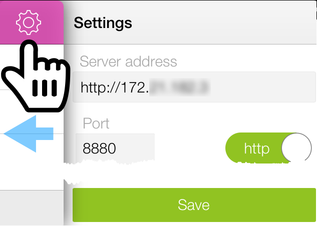
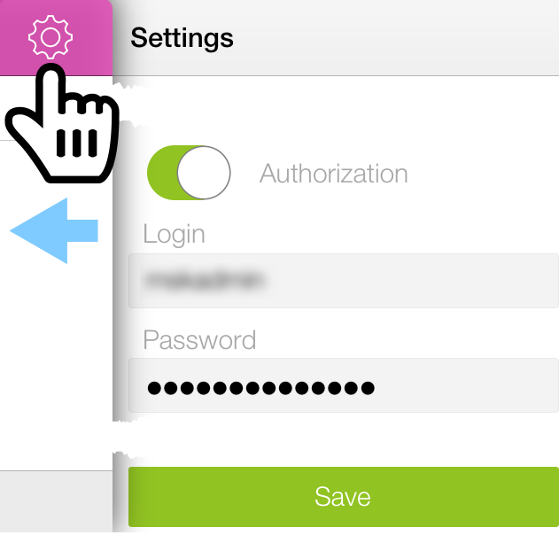

To start monitoring your app(s), specify MoSKito-Control WebApp address, so that the App could get the data.
Connect to MoSKito-Control WebApp:
- Tap
 (top panel) or drag the main panel to the left.
(top panel) or drag the main panel to the left. - In Server address field, type in MoSKito-Control WebApp address.
- In Port field, type in MoSKito-Control WebApp port address.
- Choose between http/https protocols by sliding the http switch. 
- In case your WebApp requires Login and Password:
- Slide the Autorization switch to the right (to turn it green).
- Type in your Login and Password in the corresponding fields. 
- Tap Save.